Wrench dependence
Separates actions governed by force or torque cues from those primarily governed by geometric pose.
University of York
An empirical action-level taxonomy for describing, comparing, and reusing physical manipulation primitives in chemistry laboratories.
School of Physics, Engineering and Technology & Department of Chemistry, University of York
Abstract
Laboratory automation has made well-defined experimental protocols increasingly executable by machines, yet the physical manipulations surrounding those protocols remain difficult to generalize. Setup, transfer, adjustment, assembly, and cleanup operations form a long tail of context-dependent actions that are typically handled manually or implemented as bespoke robotic skills for individual workflows and platforms.
TARMAC is an empirical taxonomy of laboratory actions grounded in the analysis of instructional chemistry practice. Rather than prescribing a control framework, it emerges from a bottom-up decomposition of real laboratory manipulations into physically meaningful primitives organized by wrench dependence, actuation directness, and motion periodicity.
Across the experimental contexts examined, the majority of actions can be expressed as compositions of a finite and reusable set of primitives. This structure provides a basis for organizing, comparing, and reusing manipulation capabilities across experimental workflows.
Taxonomy
Laboratory actions in the source corpus are organized by wrench dependence, actuation directness, and motion periodicity. These dimensions produce four high-level categories that decompose into action-level primitives.
Separates actions governed by force or torque cues from those primarily governed by geometric pose.
Distinguishes direct manipulation from actions mediated through tools, containers, or implements.
Distinguishes finite one-off actions from cyclic or sustained actions whose outcomes accumulate over time.
Controlled placement and orientation under minor resistive forces.
Joining or separating objects through controlled force, torque, or deformation.
Mediated manipulation through tools, implements, containers, or pressure gradients.
Repeated or sustained actions that mix, clean, spread, secure, or mechanically modify material.
Validation
The paper evaluates whether the written taxonomy is operational, whether the primitive set covers written chemistry procedures, and whether representative primitives can be instantiated on robotic platforms.
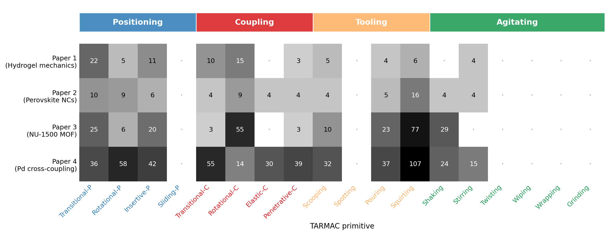
Robotic demonstrations
The demonstrations span transfer, agitation, setup, recovery, embodiment transfer, and cleanup. They are presented as evidence for the action representation rather than benchmarks of a single robot platform.
Franka validation of Tooling and Agitating primitives such as pouring, stirring, and shaking.
Dobot solution preparation spanning setup, execution, and cleanup.
Two Franka arms assemble a separating-funnel apparatus and recover from intermediate misalignment.
Dataset examples
The source corpus contains 91 instructional chemistry videos and 562 annotated manipulation segments. The examples below illustrate air-sensitive handling, chromatography, reduced-pressure distillation, and NMR sample preparation.
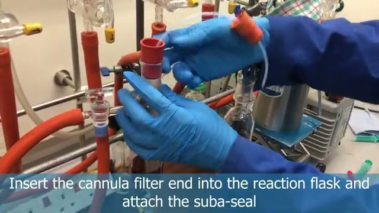
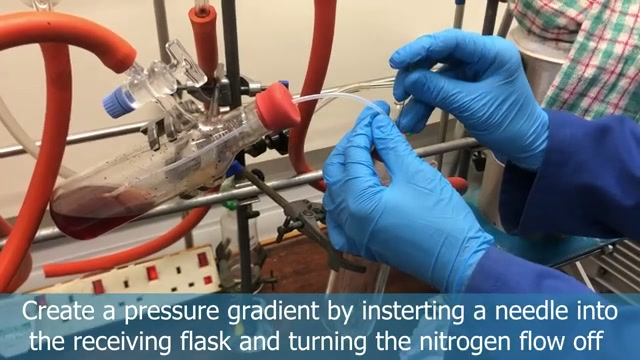
Elastic-C, Penetrative-C, Rotational-P, and Transitional-P support inert-atmosphere handling.
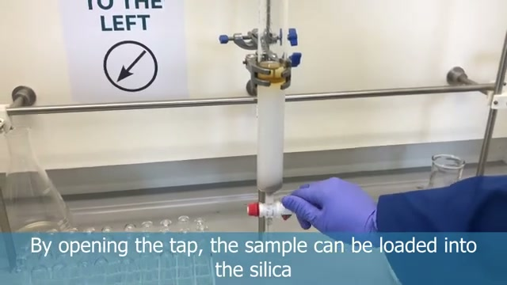
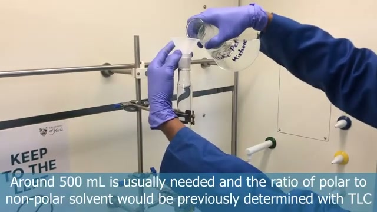
Squirting, Scooping, Pouring, Rotational-P, and Coupling primitives cover preparation and elution.
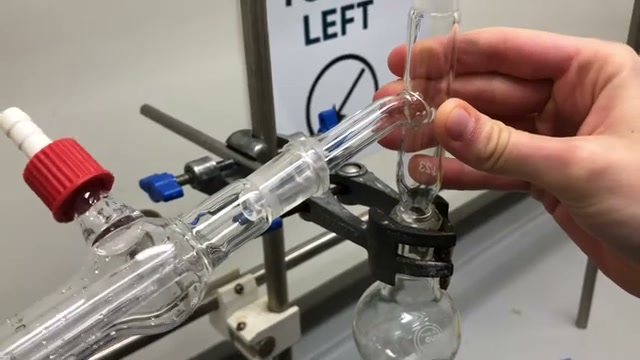
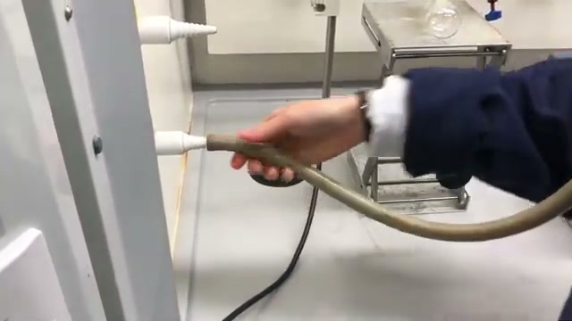
Twisting, Insertive-P, Transitional-C, and Elastic-C describe vacuum-tight apparatus setup.
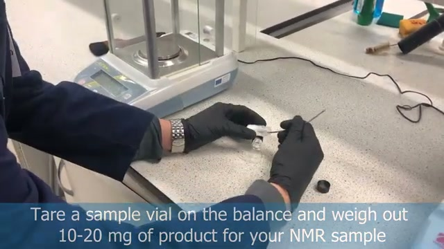
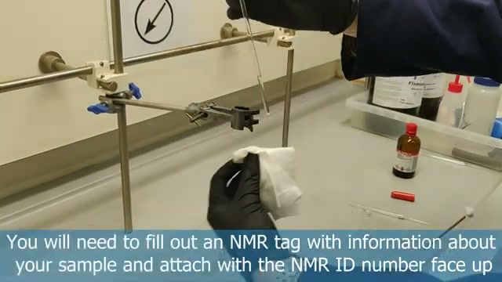
Scooping, Squirting, Pouring, Coupling, Wiping, and Positioning cover weighing, dissolving, and labeling.
Additional frames
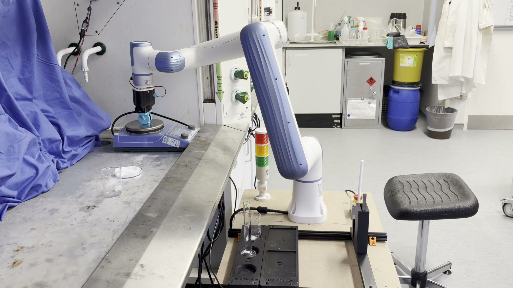
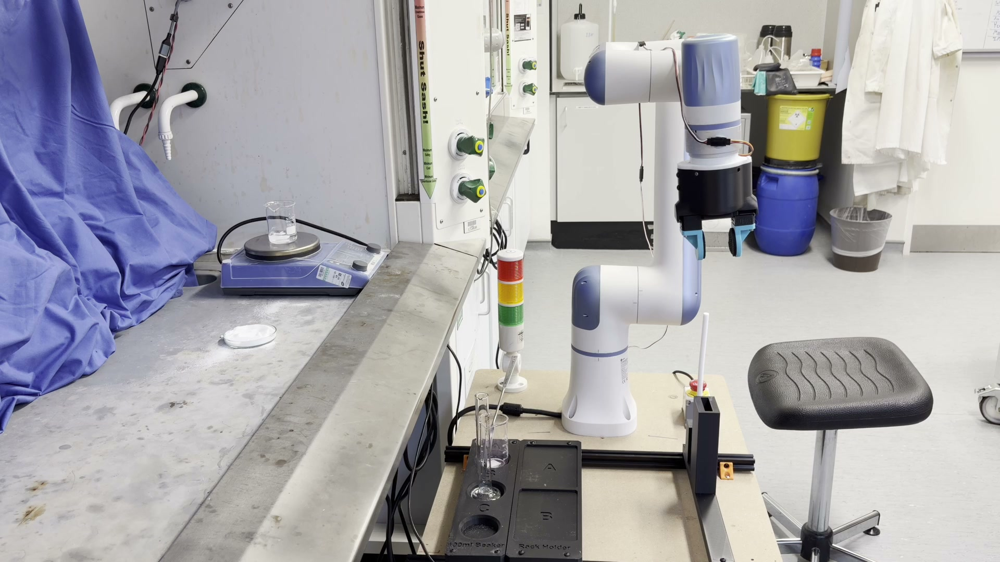
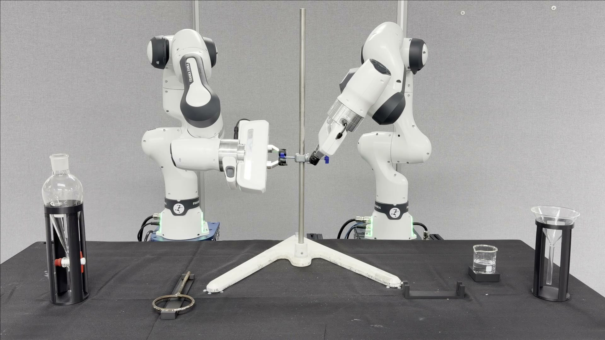
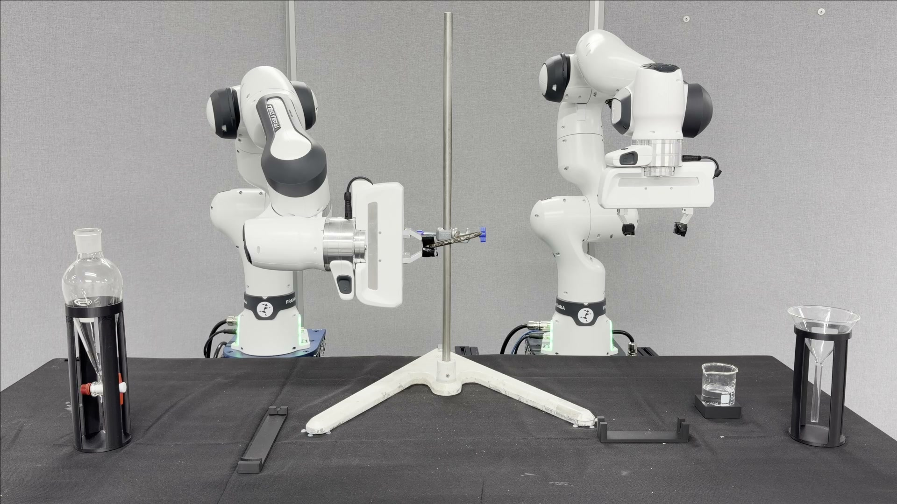
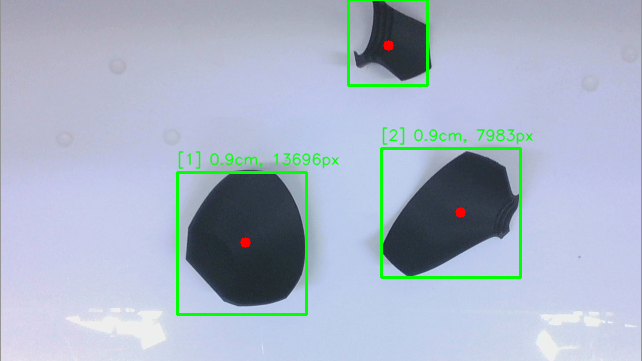
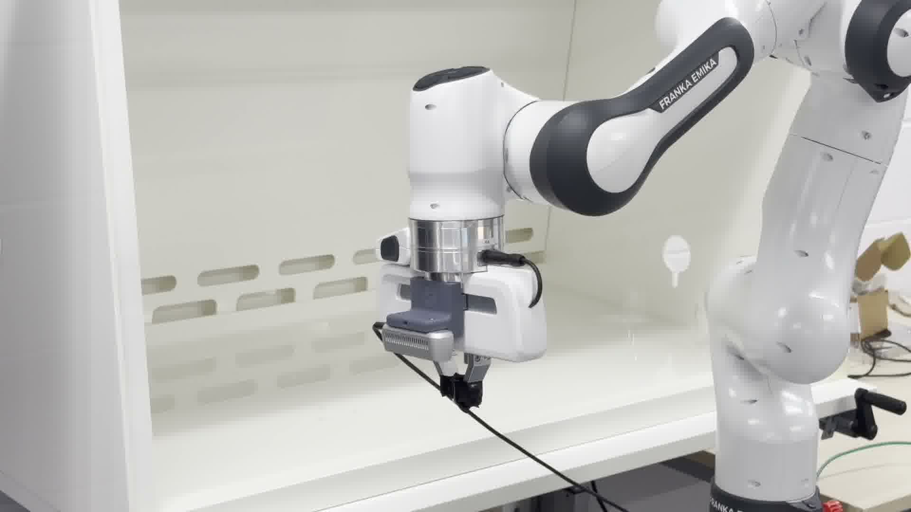
Resources
The paper, supplementary information, lightweight public data artifacts, and robotic control code are linked below. The full source-video archive and per-procedure decomposition outputs can be added here when the public dataset package is available.
@misc{huang2026tarmac,
title = {TARMAC: A Taxonomy for Robot Manipulation in Chemistry},
author = {Huang, Kefeng and Martin, Alice E. and Pipe, Jonathon and Wang, Tianyuan and Franklin, Barnabas A. and Horbaczewskyj, Chris and Tyrrell, Andy M. and Fairlamb, Ian J. S. and Zhu, Jihong},
year = {2026},
url = {https://tarmac-paper.github.io/}
}